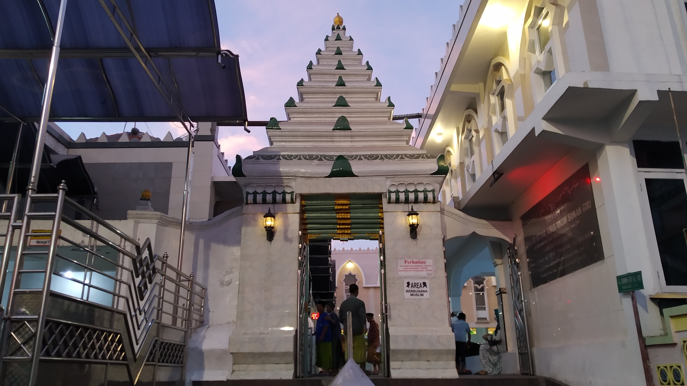
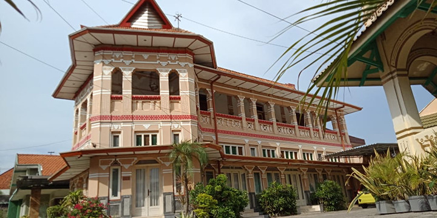
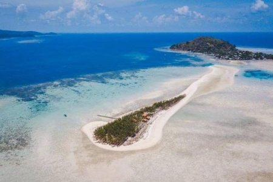
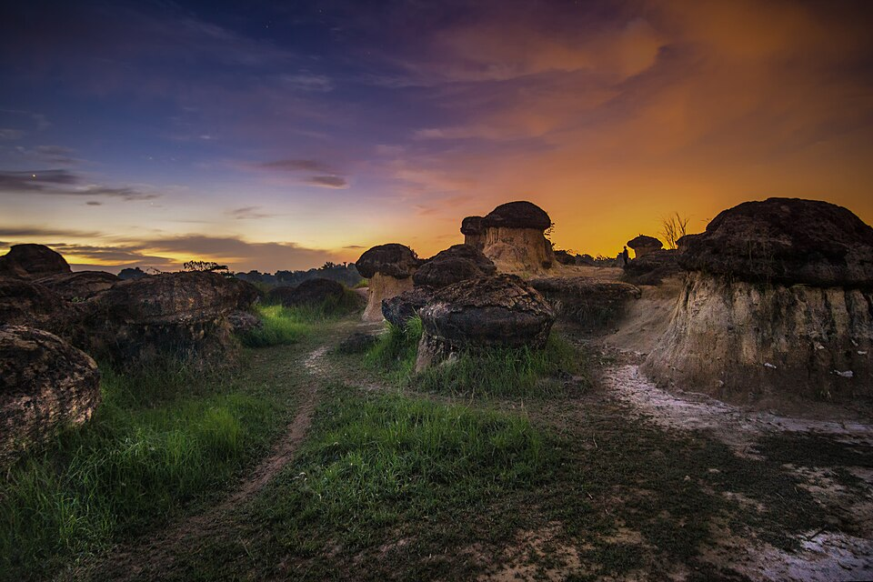

Gresik Tourist Places
|  | Sunan Giri Mosque and Tomb One of the Walisongo (nine saints). |
|  | Kampung Kemasan Historical heritage neighborhood in Gresik. |
|  | Bawean Island Famous for its endemic Bawean deer. |
|  | Mushroom Hill Nature tourism area & wildlife park. |